For part 1, I used a photograph of one of my dogs! The photo was then center cropped and resized to be 512x512 pixels.
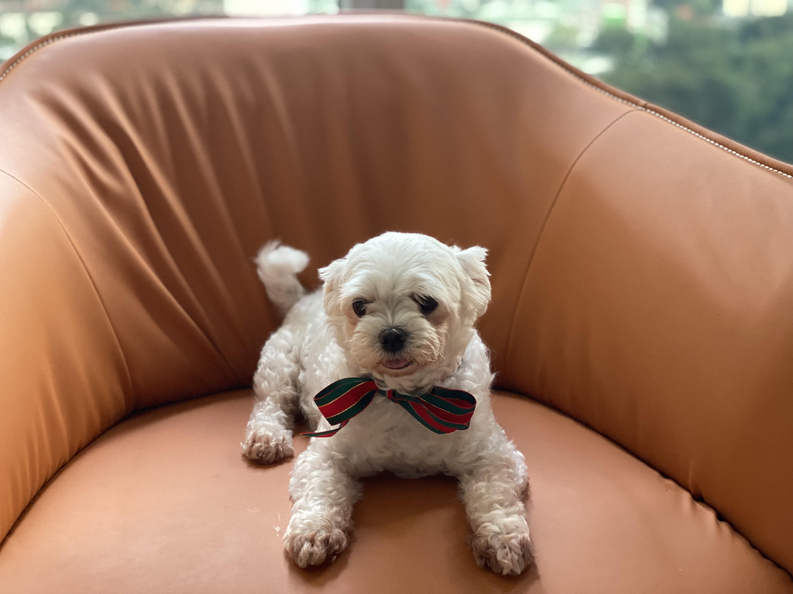
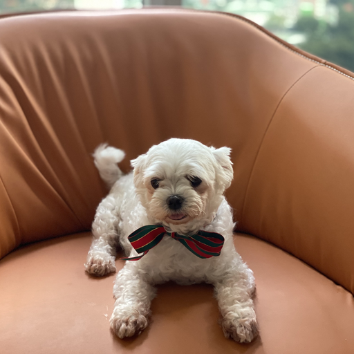
I implemented the interpolate function which is supposed to convert clean images to a noisy image. This function returned the image at time t, which was calculated using the linear interpolation equation provided to me:
xt = (1 - t) * e + t * x1
where xt is the image at time t, x1 is the clean image at time t=1 and e is gaussian noise.
To sample the noise, e, I used the provided function, noise(seed), which used torch.randn() to generate random noise with the same shape as the clean image.
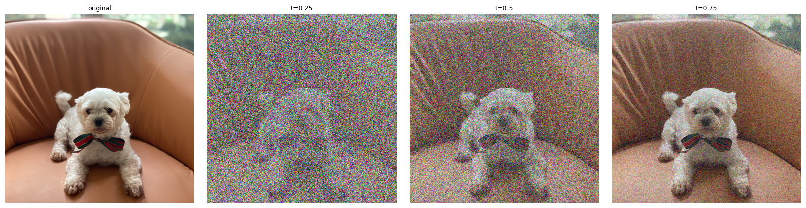
My observations: As the t value decreased, the amount of noise in the image increased. This lines up with the equation, as the added noise, e, is scaled by 1-t. Therefore, lower t values would increase the value e is scaled by. At t=0.25, there is so much noise that my dog is barely visible in the photo. Although I can see his silhouette, his higher-frequency details are no longer visible to me. For example, the pattern of the ribbon and his fur texture can't be seen in the noised image at t = 0.25.
Below are the results on the photo of my dog. The noisy input at a certain t value is on the right, and the best gaussian blur is on the left:
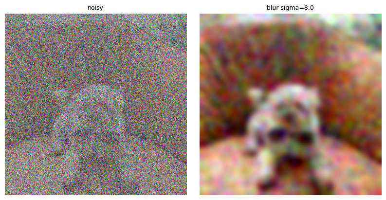
t = 0.25
blur sigma = 0.8
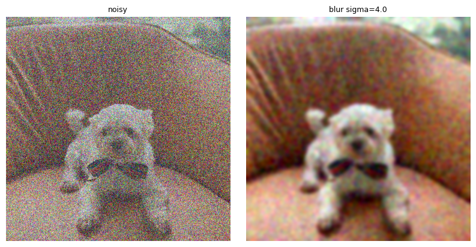
t = 0.50
blur sigma = 0.4
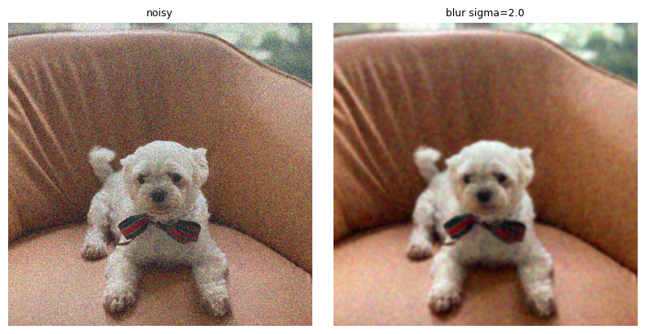
t = 0.75
blur sigma = 0.2
My observations: A lower the t value needed a higher gaussian blur sigma value to get the best result. I also noticed that even after the gaussian blur, there were less high frequency details visible when t = 0.25 as opposed to when t = 0.75. At t = 0.25, my dog ends up looking like a blob after gaussian blurring. However, at t = 0.75, I am able to distinguish his features and fur details after gaussian blurring.
To implement the one_step_denoise function, I used the following extrapolation equation provided to me:
x1 = xt + (1-t) * predict_velocity(xt, t, condition)
This will predict the clean image, x1, using the predicted velocity of the noisy image at t. Additionally, the condition used was the text embedding for "a high quality photo". The one_step_denoise function returned the calculated x1 prediction.
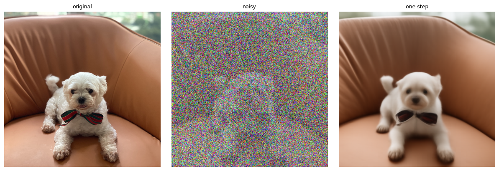
t = 0.25
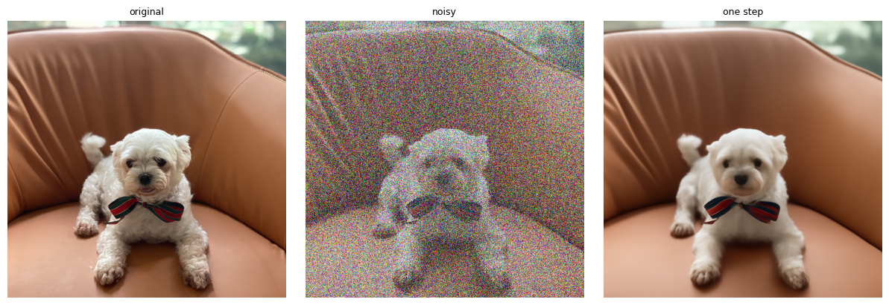
t = 0.50
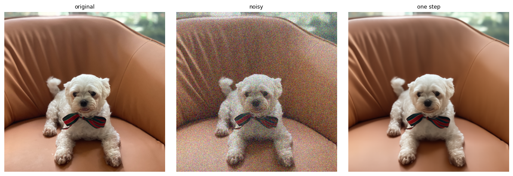
t = 0.75
My observations: I noticed that the one_step_denoise function was much better at creating an image similar to the original and predicting the velocity at higher t values. However, at all 3 noise levels, the function was still able to successfully keep my dog's silhouette and general shape. It just was not able to capture higher frequency details like fur texture and the ribbon pattern when there was more noise in the image.
I implemented the velocity_diagnostics function, which will visualize what velocity prediction is added by the model at time t. First, I had to calculate the predicted velocity at time t, which I did by calling predicted_velocity(xt, t, condition). The ground truth velocity is just the clean_image - xt.
Afterwards, I identified the ground truth update, and predicted update using the equation: (1-t) * velocity. Velocity would be either the predicted or ground truth velocity. To create an error map, I calculated the root-mean-square difference between my predicted and ground-truth updates.
Below are the results for t values of 0.25, 0.50 and 0.75:
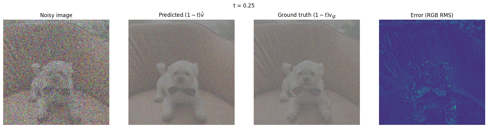
t = 0.25
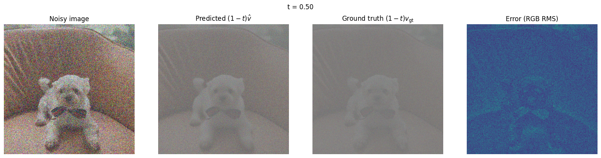
t = 0.50
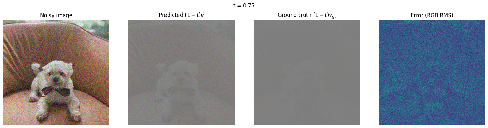
t = 0.75
My observations: Similar to my previous observations, I noticed the predicted velocity had much less error for higher t values. The error heatmap at t=0.75 indicated that there were much less errors between the ground truth velocity and prediction velocity in comparison to when t=0.25. I also noticed that the errors at t=0.25 are mainly in the high-frequency details such as the fur texture and ribbon details.
I implemented the euler_sample function. This function takes a noised image at time t, a start time (t), a step size, and velocity function. The function is supposed to go from the noised image at time t and iterate from t to 1 over a defined number of steps to find the clean image. Every iteration, the function will calculate the image at time t+(step_size) using this equation. The step size determines how many steps the function will take:
x_(t+step_size) = x_t + step_size * velocity
I used Euler sampling to denoise the photo of my dog with a start time of t=0.5 and step size of 0.02 (25 Euler steps). Below shows the denoising process at different t values:
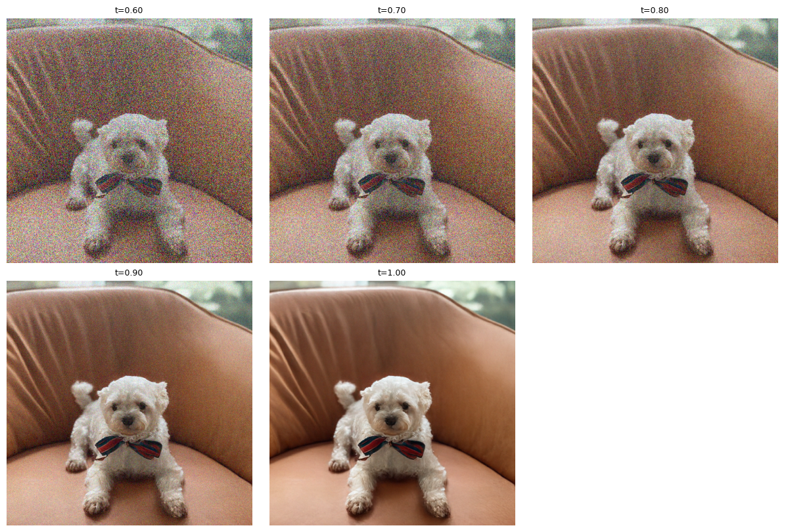
Here is a comparison between the 3 methods that were used to denoise:
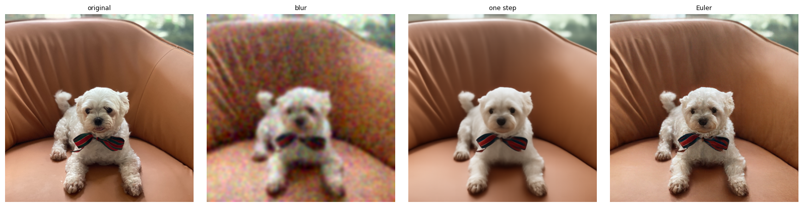
I noticed that even though there was still noise at lower t values, such as 0.60, there was some high frequency features of my dog. Overall, the result of Euler sampling created a fur texture that was similar to my dog's fur even at lower t values. Comparing this method to one-step denoising and gaussian blur, I think that Euler sampling is the most effective method at denoising an image. The predicted clean image from Euler sampling had no more noise, and my dog appears to have the same fur texture and silhouette as the original image. With the one-step denoising, there was no noise but a lot of the finer details of my dog such as fur texture was not added by the model in this prediction. I think the least effective was the gaussian blur method, as there is still noise and my dog appears very blurry in the image.
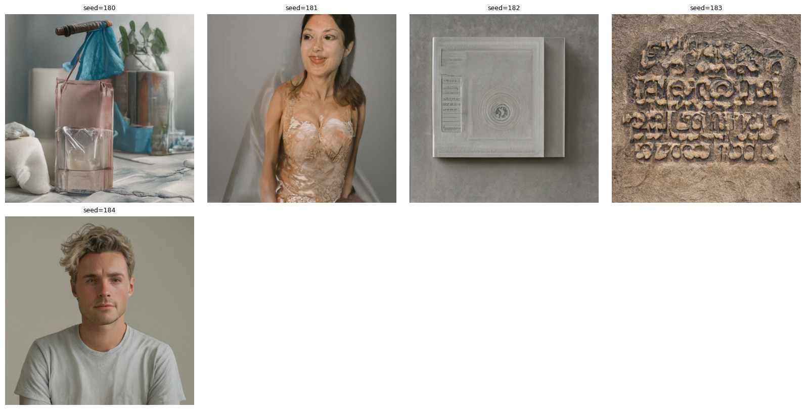
seeds = [180, 181, 182, 183, 184]
For this part, I was tasked with implementing the cfg_velocity function. This function is supposed to help guide the velocity towards a specific prompt embedding.
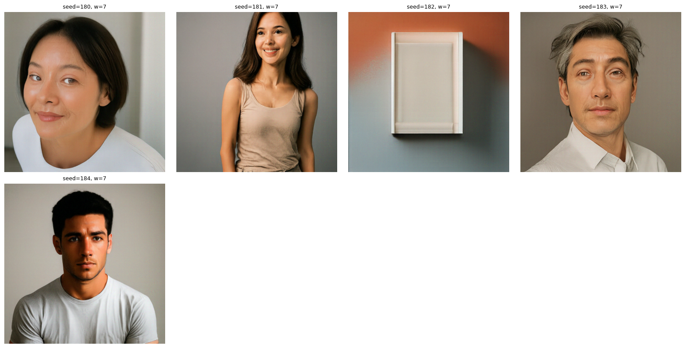
seeds = [180, 181, 182, 183, 184]
In comparison to the images generated by part 1.6, the images look more normal and more like "high quality" images. The easiest comparison is between the images with seed = 181. The image generated without guidance generally looks like a person. However, the person has weird proportions and non-human textures. However, the image generated with classifier-free guidance looks more like a human. Her shirt texture is smooth and looks like a regular shirt, and her proportions look more human. Moreover, I noticed that with classifier-free guidance, there is a bias towards generating images of people. Images where seed of 180 and 183 were of objects when I did not use classifier-free guidance. However, with classifier-free guidance, the two generated images were people.
I implemented the edit function by using euler_sample to iterate from x_t to x_1, where x_t is the image at time t. To generate x_t, I used the equation (1 - t_start) * e + t_start * x_1, since we had the initial clean image, x_1. The condition was the same as the above parts: "a high quality image". Therefore, I used the cfg_velocity function I coded in part 2.1 as the velocity for the euler_sample function call. Then, I called this edit function on various t values for each image: 0.02, 0.04, 0.06, 0.10, 0.14, 0.25, and 0.50.
Here are the result of the image-to-image edit function for the provided campanile image at various starting times:
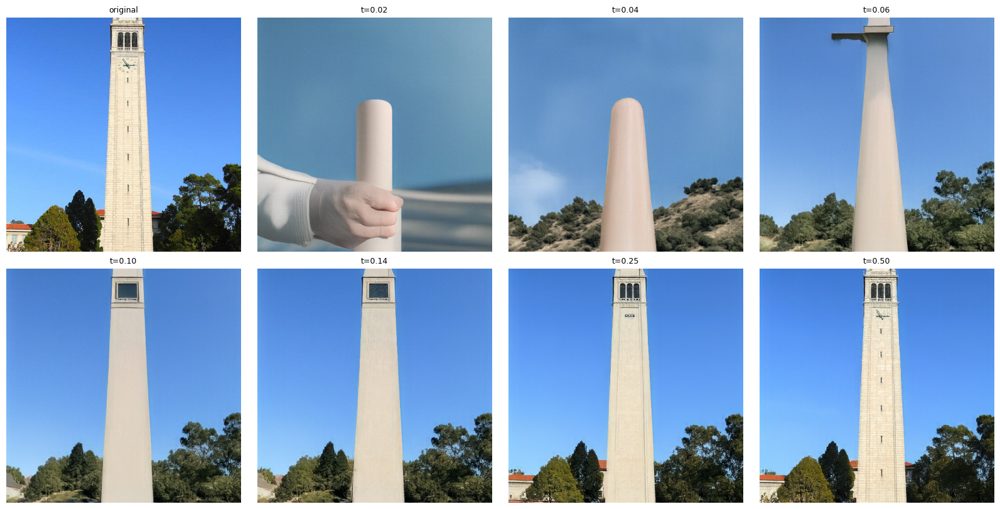
My first image that I selected was a photo of one of my dogs! I was interested to see how the ribbons would be interpreted when the image had a larger amount of noise at lower t values. Below is the result:
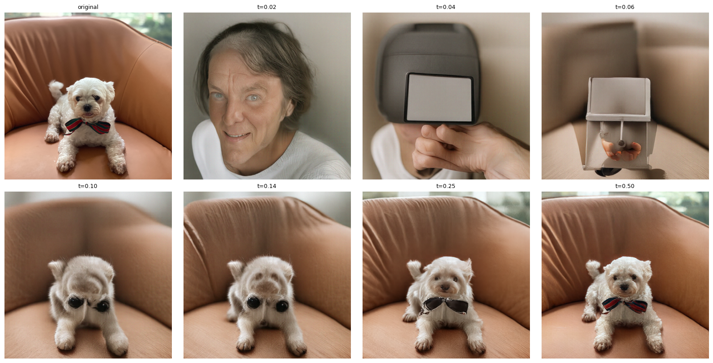
My second image was a photo I took of my squishmallow keychain. I think the squishmallow is supposed to be a pink fox.
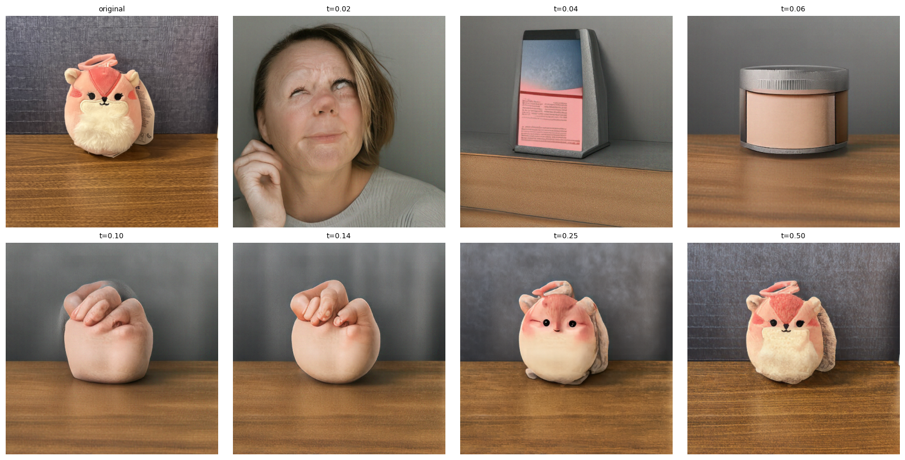
My web downloaded image was an image of Bibble, a character from some old Barbie movies. Bibble is a really unique-looking character so I was curious to see the result of the image-to-image editing! Below is the result:
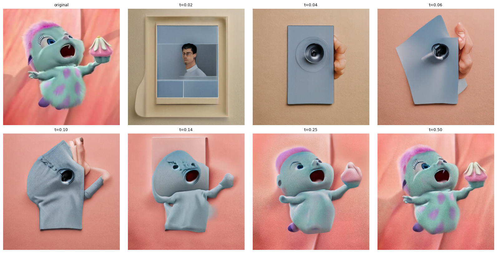
Image source link here
For my drawings, I created line drawing sketches of a deer and a castle. For the castle, I added numerous details such as windows, texture on some of the roofs and stars because I want to see whether these details would be captured at lower t values. However, the results were not as expected. The deer drawing predictions were completely blank from t = 0.04, 0.06, 0.10, 0.14. I think this was because the lines were very thin and high-frequency. Therefore, high levels of noise would completely eliminate these high-frequency lines. To test this theory out, I went over both of the drawings with a sharpie and used some color pens to add color to try to add more lower frequency details. I did not have a brown pen, so I used blue to color the deer. Below are the results from these:
Deer Drawing
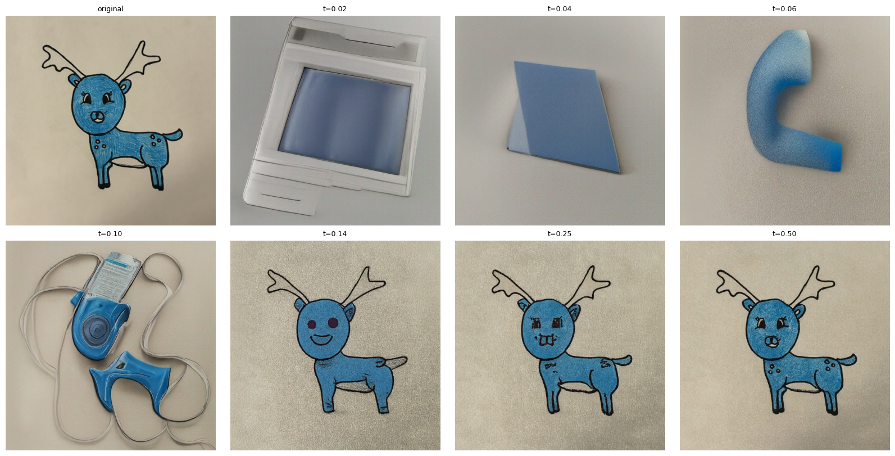
Castle Drawing
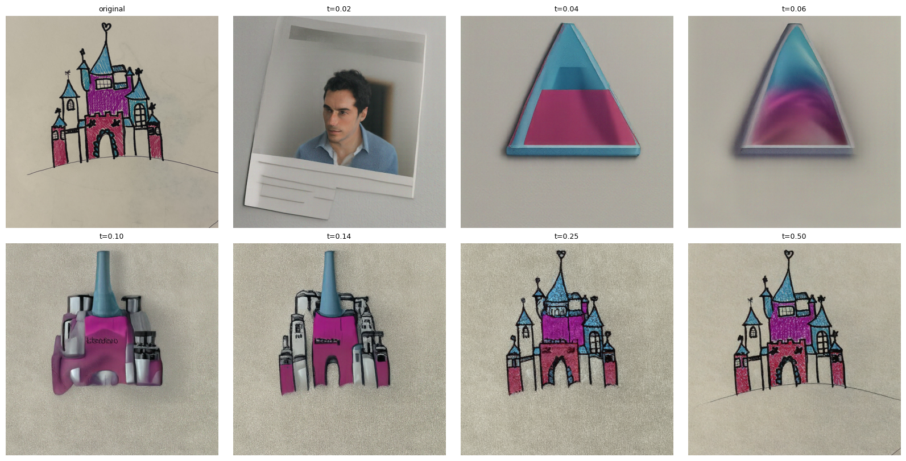
Here are my failed results for my initial line drawings:
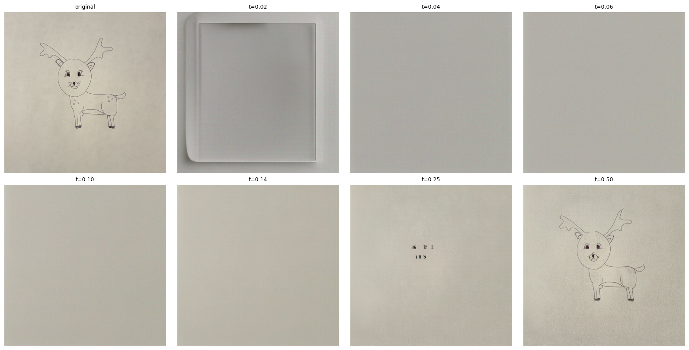
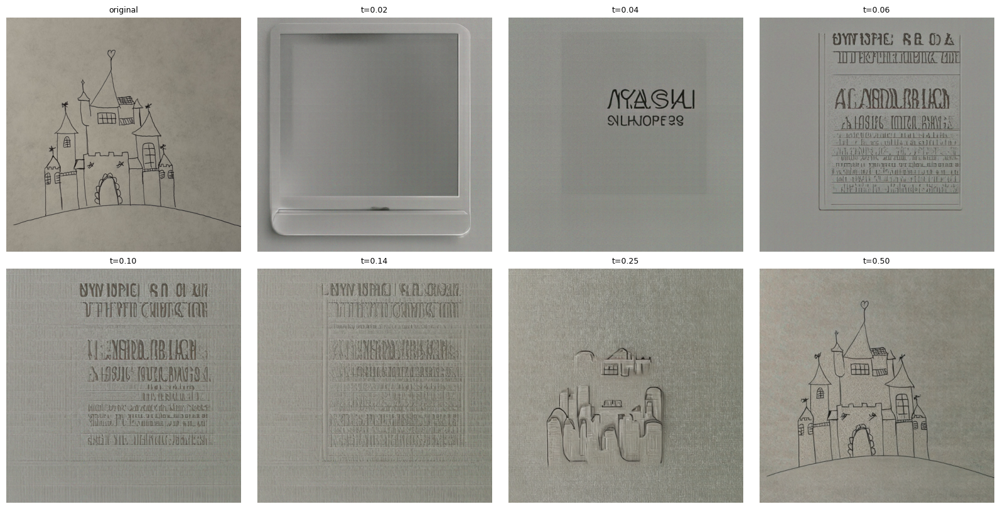
The prompt for the provided campanile image was "a photograph of a big vase". I thought the campanile shape was similar enough to a vase to create a successful vase image at low values of t_start.
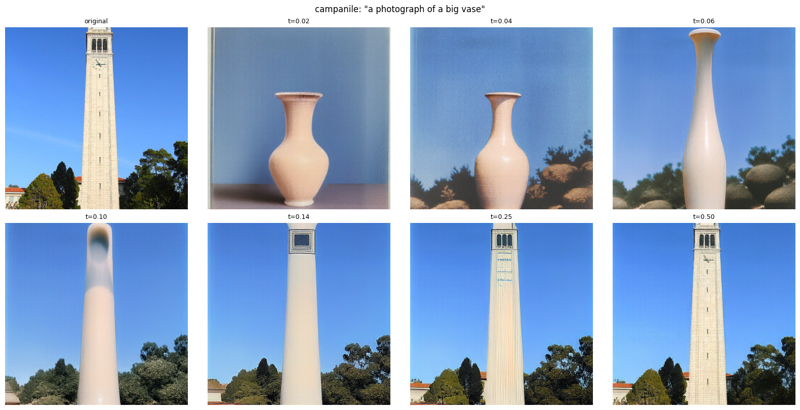
For the image of my dog, I used "a painting of a polar bear cub" as the prompt. I chose this prompt because my dog is also white like a polar bear, and looks a little bear-like in the image. I used "painting" because I wanted to test how effective the text-guiding was at changing the textures from a photograph to painting.
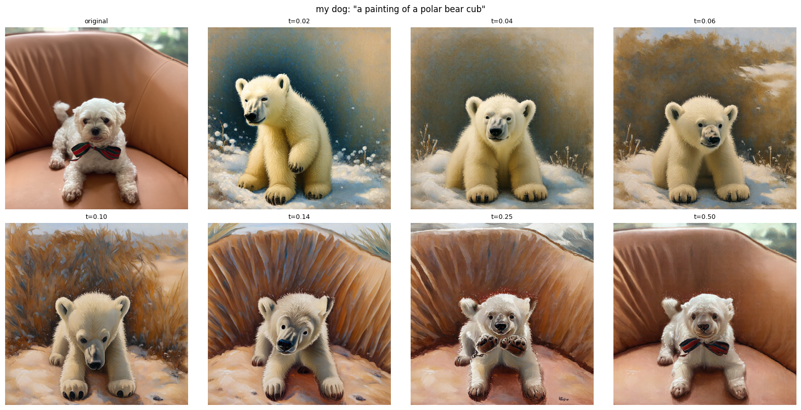
I used "a photograph of a gummy bear" for the image of my squishmallow because I was interested to see how the model could use the squishmallow's shape to form a gummy bear.
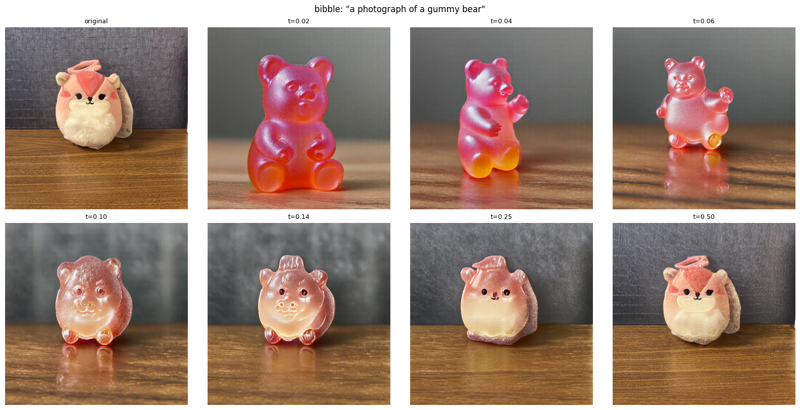
My observations: For all images, I noticed as the t_start value increased, the generated image became less like the given prompt and more like the original image. The one aspect of the prompt that was maintained at higher t_start values were the textures of the object. For example, my squishmallow had a gummy bear texture even at t_start = 0.14 and 0.25 even though it didn't have the gummy bear shape. This also happened with the photo of my dog, as the polar bear fur texture was still there at t_start = 0.25 and 0.50 even though the animal's shape was more dog-like.
My first visual anagram is "an oil painting of a castle" when upright, and "an oil painting of a group of fairies" when upside down. I went through a few iterations. Initially starting with "a painting of a magical castle" and "a painting of a group of fairies flying". However, the "flying" part of the prompt resulted in the fairy legs distracting from the castle silhouette in the upright image. Therefore, I removed "flying" and also "magical" to eliminate the fairy legs and any complicating wording. This created a much better result. I ended up adjusting the seeds for generating the random noise to try to find the best version possible. I ended up with seed 220.
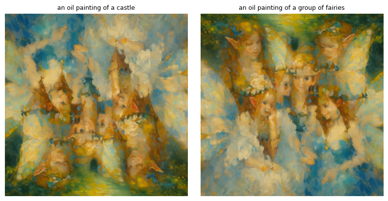
seed: 220
The second visual anagram is "a lithograph of a cat" and "a lithograph of an old town" with a random noise generator seed of 220. As shown below, I ended up experimenting with various animals of the cat family, and changing the wording around "town". Since both visual anagrams were run on the same google colab cell, I also experimented with seeds for both visual anagrams to find the seed that worked best for both. I even initially tried "a photograph" and "a painting" instead of "a lithograph", but ultimately decided that a lithograph would work best out of images, as it would eliminate the issues that colors were adding to the realism of the old town image.
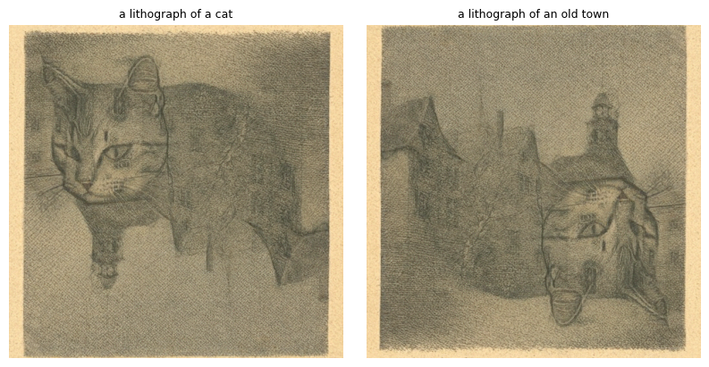
seed: 220
Here is also the visual anagram of the example prompt: "an oil painting of an old man" and "an oil painting of a campfire". The seed used was 180. I thought the result turned out to be really nice, so I wanted to share it on my page!
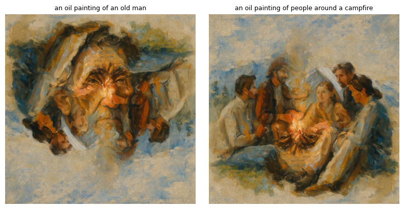
seed: 180
Here are also some of my "failed" visual anagrams
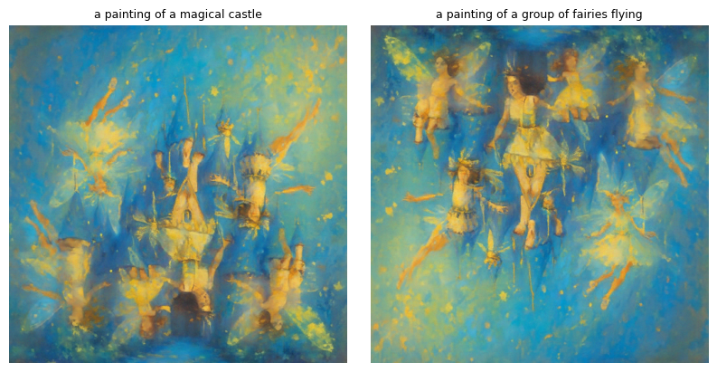
seed: 180
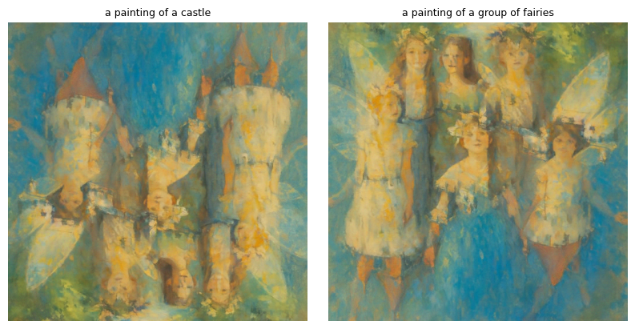
seed: 180
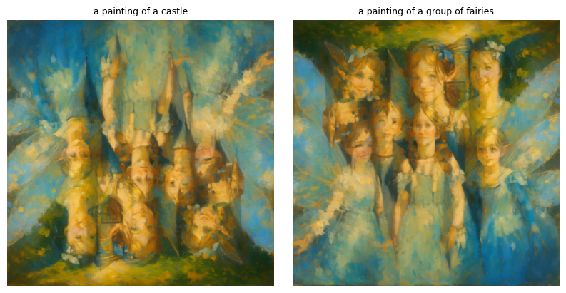
seed: 350
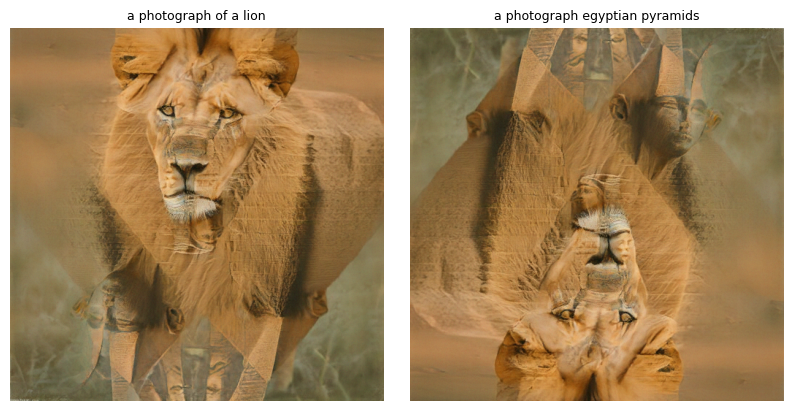
seed: 180
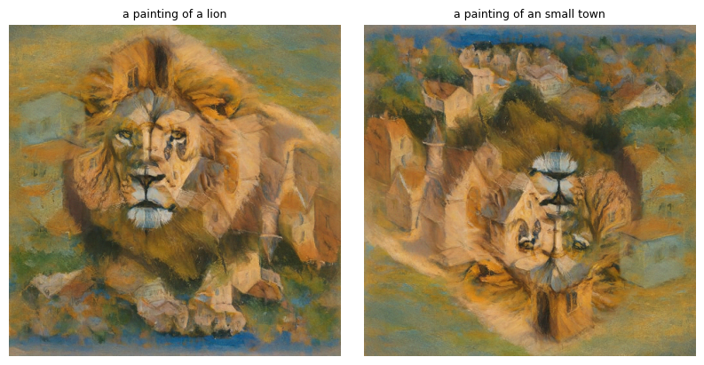
seed: 350
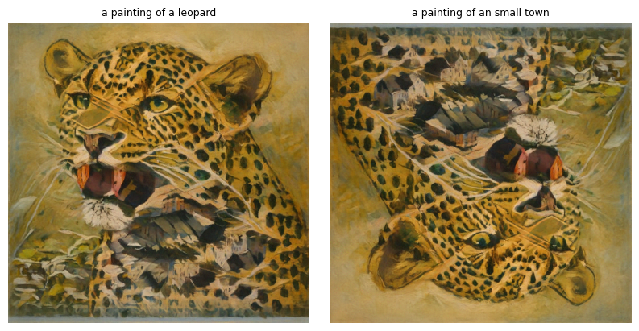
seed: 275
For my first hybrid image, I chose the low-frequency prompt to be "a lithograph of a woman's face", and the high-frequency prompt to be "a lithograph of flowers". The seed used to generate the random noise was 180. I believe these prompts were quite successful, as up close the flowers are visible and look natural, and from a distance I can see facial features of the woman such as the eyes and nose. To get to this point, I had to adjust the prompts a bit. Initially I had started with trying to capture this hybrid image in a photograph. However, the face did not look realistic enough from a distance. Therefore, I decided to make the image a lithograph, as this does not require as much realism. In addition, I just used "a woman" for the low-frequency prompt, which gave a result where it was easy to see a silhouette of the hair, but the features were not clear enough. After specifying that it should be "a woman's face", the facial features became more distinguishable from a distance.
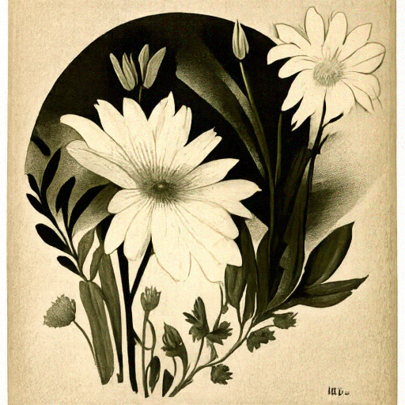
For my second hybrid image, the low-frequency prompt was "a photograph of a dog", and the high-frequency prompt was "a photograph of mountains" with a seed of 180 to generate the random noise. This image also went through many iterations. Initially, I wanted both prompts to be related to an animal. However, the low-frequency image just ended up looking like the high-frequency animal. Therefore, I decided to switch the high-frequency prompt to be nature-related. I theorized that the model might have had difficulty with my initial idea because an animal image would still have low-frequency noises that would make it distinguishable from afar. Therefore, it would be difficult to fully eliminate the high-frequency animal from a distance. I chose mountains as the high-frequency prompt, as mountains can have contours that could help form a dog-like shape.
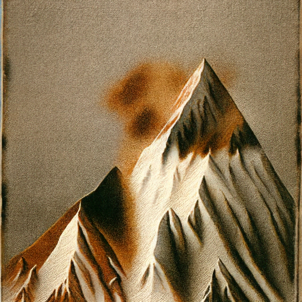
I created a visualization of the noising process on 10 images of the train dataset from the MNIST dataset. To noise an image, I needed to add gaussian noise, e, to the clean image. The equation to noise an image is: noisy_image = image + noise_level * e. Noise level, σ, determines how much of the noise is added to the clean image. I visualized the noising process across these σ: 0.0, 0.2, 0.4, 0.5, 0.6, 0.8, 1.0. To generate the gaussian noise, I used torch.randn_like() to create gaussian noise with the same shape and dimensions as the clean image. Below is the visualization I created:
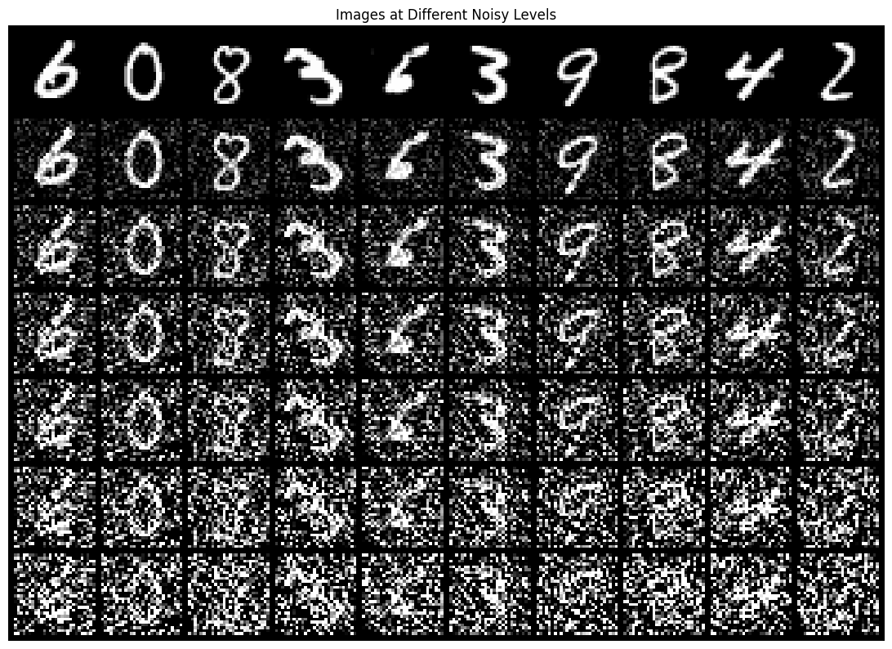
To train the UNet, I used the following hyperparameters and architecture, as instructed:
Similar to when I visualized the denoising process, I generated the gaussian noise using torch.randn_like(). For each batch, I used a different gaussian noise to ensure that the model sees different gaussian noises in one epoch, reducing overfitting.
Below is the training loss graph:
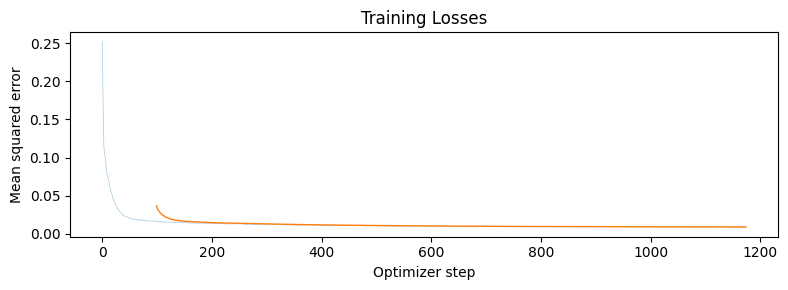
Below are the visualizations of the model's denoising predictions on 10 images of the test dataset after epoch 1 and 5. The first row are the clean images, the middle row contains the noised images, and the last row contains the predicted images using the trained UNet. I used the same gaussian noise to noise the images between epochs 1 and 5 so that the results can be compared. I noticed that between epochs 1 and 5, there was an improvement in the prediction.
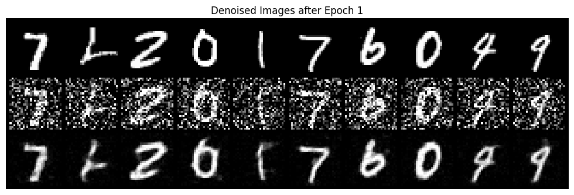
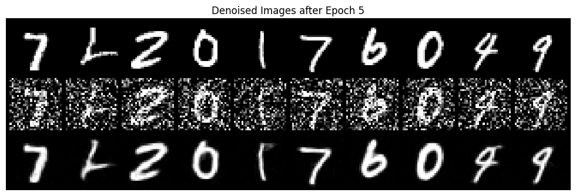
I visualized the model's predictions for different noise levels on 10 images from the test dataset. The noise levels visualized were: 0.0, 0.2, 0.4, 0.5, 0.6, 0.8, 1.0. I used the same gaussian noise for all noise levels so that I can easily compare the results.
Below are the results. The top images are the clean images, the middle images are the noised images, and the bottom images are the model's denoised image prediction.
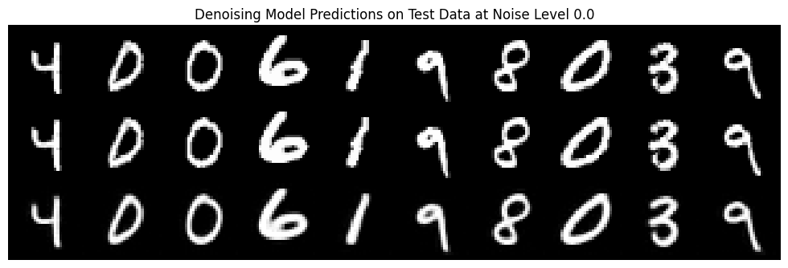
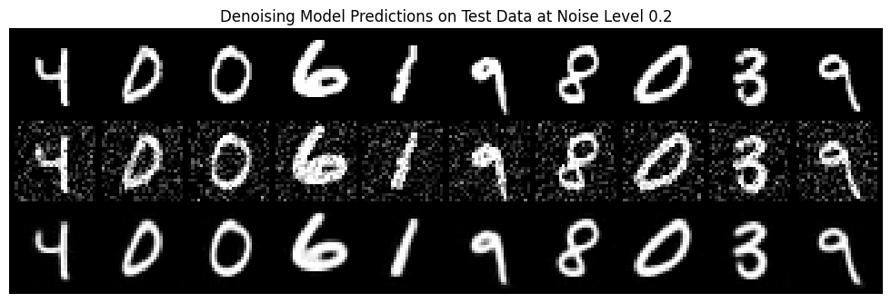
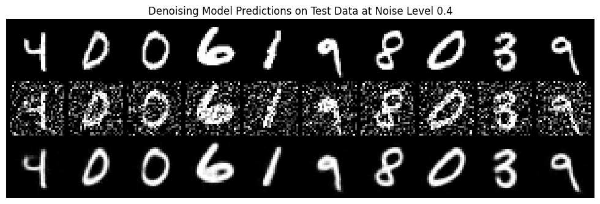
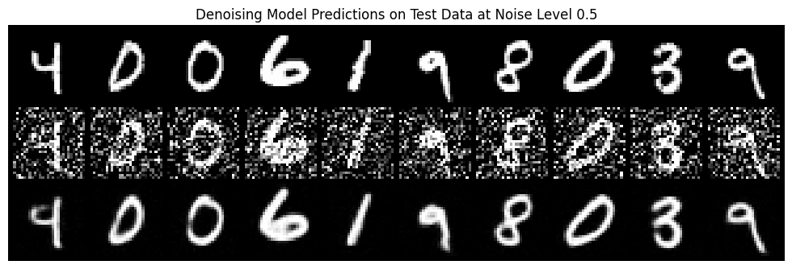
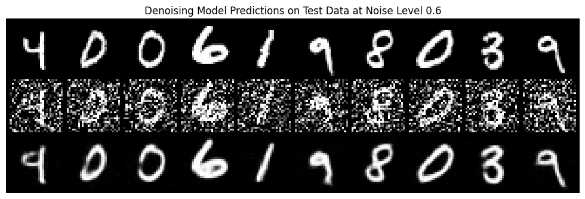
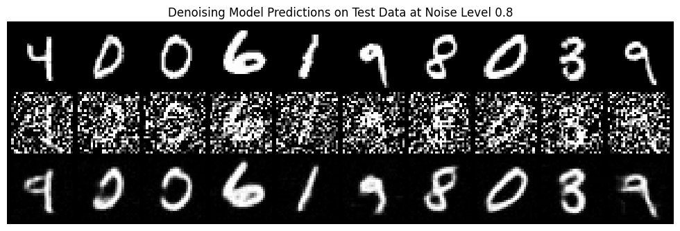
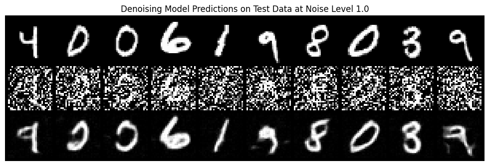
I followed the same training steps as 1.2.1. The only difference was the model's inputs when training and testing. The input was pure gaussian noise. For the training, I generated new gaussian noise for every batch and epoch to prevent overfitting. For testing at epochs 1 and 5, I used the same gaussian noises so that the results can be compared. Below are the visualization results of epochs 1 and 5:
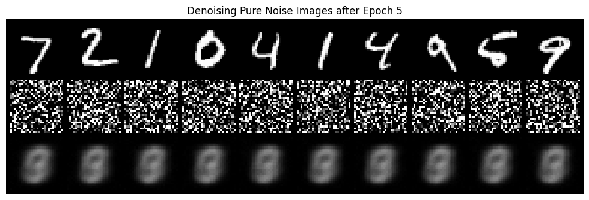
The training loss curve is below:
I noticed that all the predicted images at both epoch 1 and 5 were identical. The predicted image was of a blurry number that looks like a mixture between 3, 6, 8 and 9. Moreover, further training between epoch 1 and 5 did not improve the result. The loss used during training was the L2 distance/MSE loss, which attempts to minimize the squared distance between the predicted image and clean image. The training images contain all 10 numbers (0-9). With pure noise, the model cannot easily decipher which number the image is supposed to be. Therefore, it likely will create an image which will reduce the L2 distance. This ends up being a mixture of all the digits.
After implementing the Time-Conditioned UNet, I trained the model using the following hyperparameters and architecture, as instructed:
The model that was trained was a Time-Conditioned Flow Model. This flow model used the Time-Conditioned UNet that I had coded in part 2.1 to predict velocities. This UNet has two FCBlocks which contains two nn.Linear() passes on the time, t.
The training loss curve is:
Here are the results of sampling from random noise on epochs 1, 5 and 10:
I used the same seeds for each epoch: 100 - 139. This ensured that the 40 images I sampled on would have different initial gaussian noise images, but these inputs would be the same between epochs to allow for comparison.
I used the same hyperparameters and architecture as part 2.2. The only difference was that I used my Class-Conditioned Flow Model, which uses the Class-Conditioned UNet that I coded in part 2.4 to predict the velocity at a specific time, t, given the goal class.
The training loss curve is:
Here are the results from sampling for each of the different classes (0-9) after epochs 1, 5 and 10:
I used the same seeds between epochs like with part 2.3. But I varied the seeds between the different noisy image inputs to ensure each sample used a different noisy image to better test my model's generalizability.
Removing the learning rate scheduler means that the learning rate would not decrease between epochs. Therefore, there is a chance that the model could miss the minimum during training if the learning rate is too high. To offset this, I decreased the learning rate to 1e-3. I think the performance ended up being good despite removing the learning rate scheduler. I noticed that the sampled images of this model after epoch 1 ended up looking more like numbers than the model I trained in part 2.5 with the learning rate scheduler. This could be because the learning rate when training epoch 1 was larger in part 2.5. The learning rate decreased between epochs so the model was able to find a local minima.
Below are the results from sampling using the model that has been trained without the learning rate scheduler for each of the different classes for the model after epochs 1, 5, 10:
Here is the training loss curve: